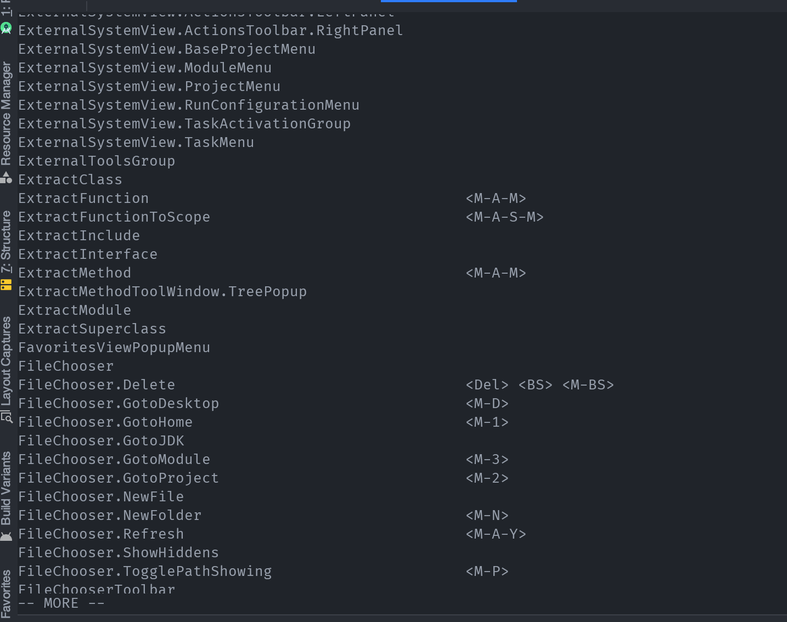
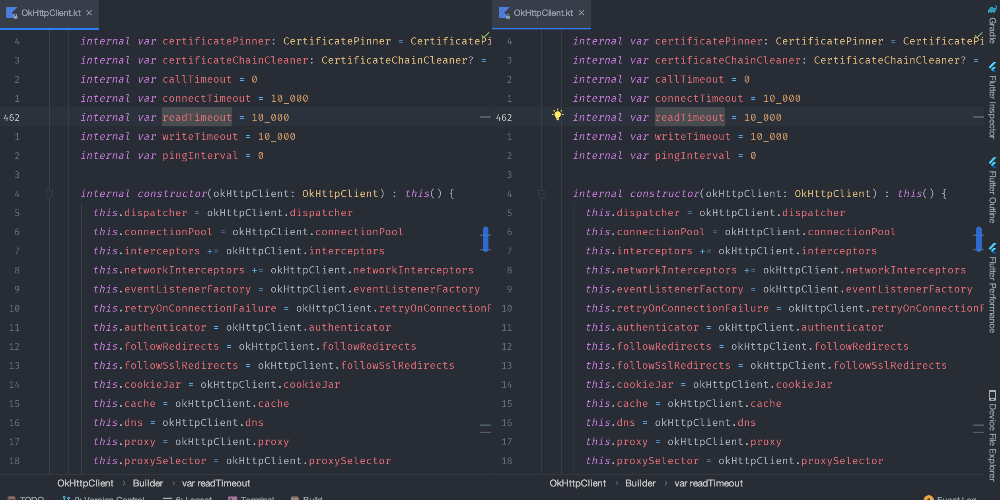

前言
我经常要在 macOS 和 Linux 下来回切换使用，使用的过程中，有许多不便之处。比如快捷键就是一个非常头疼的问题，需要记两套不同的快捷键，而且两个平台的键位还不一样。
熟练使用快捷键可以成吨的提高效率。于是在两个平台之间使用我都要刻意去配置让两个平台的快捷键尽肯能的相似，这样开发效率才不会受到太多的影响。
方案
快捷键最重要的痛点还是在 IDE 上，一天到晚使用最多的软件就是 IDE 了，提高效率也主要是提高开发效率。我的主力 IDE 是 JetBrains 系列的 IDE ，所以这里的主要配置是针对 JetBrains 的。
JetBrains 在不同的平台山都有提供不同的快捷键，你也可以配置成一样，但是在使用过程中发现还是有不太一样，并没有完全做到完全的无缝切换，使用起来还是非常难受。
由于我之前一直使用 VIM ，我已经习惯了 VIM 的按键方式，虽然现在我使用 Emacs ，借助于 EVIL 插件，也能在 Emacs 中使用 VIM 的按键方式，不愧为神的编辑器。
JetBrains 也有 IdeaVim 插件来实现 VIM 的按键。但是只有最基本的功能，远没有达到原生的快捷键那么流畅，方便。一个好消息是 IdeaVim 可以配置，就像 VIM 一样可以配置来增强功能。这就让跨平台的可以有较好的体验了。
IdeaVim 的配置
IdeaVim 的配置文件在 ~/.ideavimrc
在配置快捷键之前，我们需要了解到 JetBrains 家的 IDE 有哪些功能可以和快捷键进行绑定的。
装上 IdeaVim 之后，在 Normal 模式下输入 :actionlist ，接着你会看到一系列功能(如下图)，我们要做的就是把这些功能和快捷键进行绑定。

在 IdeaVim 中绑定快捷键有两中方式，一种是绑定某个原有的快捷键，另外一种是绑定某个 action
绑定原有的快捷键
比如我们要让 IDE 左右分屏，可以通过如下方式绑定。其中 <Leader> 是一个前缀键，我设置的是空格。
1
|
nnoremap <Leader>wv <C-W>v
|
配置好后，只要按下 空格 wv 窗口就会被分为左右两个了。

绑定 action
在 macOS 上我们可以通过 CMD+SHIFT+A 来打开某个 action ，我们也可以为其绑定到某个快捷键上，例如：我们要跳转到某个字段的声明处，可以通过如下方式绑定。
1
|
nnoremap gd :action GotoDeclaration<CR>
|
同样按下 gd 就会跳转到字段或者函数的声明处了。
我的 IdeaVim 配置
1
2
3
4
5
6
7
8
9
10
11
12
13
14
15
16
17
18
19
20
21
22
23
24
25
26
27
28
29
30
31
32
33
34
35
36
37
38
39
40
41
42
43
44
45
46
47
48
49
50
51
52
53
54
55
56
57
58
59
60
61
62
63
64
65
66
67
68
69
70
71
72
73
74
75
76
77
78
79
80
81
82
83
84
85
86
87
88
89
90
91
92
93
94
95
96
97
98
99
100
101
102
103
104
105
106
107
108
109
110
111
112
113
114
115
116
117
118
119
120
121
122
123
124
125
126
127
128
129
130
131
132
133
134
135
136
137
138
139
140
141
142
143
144
145
146
147
148
149
150
151
152
153
154
155
156
157
158
159
160
161
162
163
164
165
|
let mapleader=' '
set hlsearch
set incsearch
set ignorecase
set smartcase
set showmode
set number
set relativenumber
set scrolloff=3
set history=100000
set clipboard+=ideaput
set surround
set multiple-cursors
set commentary
nnoremap <Leader>fs :w<CR>
nnoremap <Leader>? :action GotoAction<CR>
nnoremap gd :action GotoDeclaration<CR>
nnoremap gi :action GotoImplementation<CR>
" Move to the start of line
nnoremap H ^
" Move to the end of line
nnoremap L $
" Redo
nnoremap U <C-r>
" Yank to the end of line
nnoremap Y y$
" quit ==> close current window
nnoremap <Leader>q <C-W>w
" Tab operation
nnoremap tn gt
nnoremap tp gT
" Window operation
nnoremap <Leader>ww <C-W>w
nnoremap <Leader>wd <C-W>c
nnoremap <Leader>wj <C-W>j
nnoremap <Leader>wk <C-W>k
nnoremap <Leader>wh <C-W>h
nnoremap <Leader>wl <C-W>l
nnoremap <Leader>ws <C-W>s
nnoremap <Leader>w- <C-W>s
nnoremap <Leader>wv <C-W>v
nnoremap <Leader>w\| <C-W>v
nnoremap <Leader>bd :action CloseContent<CR>
nnoremap <Leader>wa :action HideAllWindows<CR>
nnoremap <Leader>ws :action HideSideWindows<CR>
" Quit normal mode
nnoremap <Leader>q :q<CR>
nnoremap <Leader>Q :qa!<CR>
" Move half page faster
nnoremap <Leader>d <C-d>
nnoremap <Leader>u <C-u>
" Insert mode shortcut
inoremap <C-h> <Left>
inoremap <C-j> <Down>
inoremap <C-k> <Up>
inoremap <C-l> <Right>
inoremap <C-a> <Home>
inoremap <C-e> <End>
inoremap <C-d> <Delete>
inoremap <C-o> :action Back<CR>
inoremap <C-i> :action Forward<CR>
nnoremap <C-o> :action Back<CR>
nnoremap <C-i> :action Forward<CR>
" Quit insert mode
inoremap jj <Esc>
inoremap jk <Esc>
inoremap kk <Esc>
" Quit visual mode
vnoremap v <Esc>
" project search
nnoremap <Leader>sp :action SearchEverywhere<CR>
nnoremap <Leader>ff :action GotoFile<CR>
nnoremap <Leader>fu :action FindUsages<CR>
" clear the highlighted search result
nnoremap <Leader>sc :nohlsearch<CR>
" ==================================================
" Show all the provided actions via `:actionlist`
" ==================================================
" built in search looks better
nnoremap / :action Find<CR>
" but preserve ideavim search
nnoremap <Leader>/ /
nnoremap <Leader>cl :action CommentByLineComment<CR>
nnoremap <Leader>bb :action ToggleLineBreakpoint<CR>
nnoremap <Leader>br :action ViewBreakpoints<CR>
nnoremap <Leader>cv :action ChangeView<CR>
nnoremap <Leader>cd :action ChooseDebugConfiguration<CR>
nnoremap <Leader>ga :action GotoAction<CR>
nnoremap <Leader>gc :action GotoClass<CR>
nnoremap <Leader>gd :action GotoDeclaration<CR>
nnoremap <Leader>gf :action GotoFile<CR>
nnoremap <Leader>gi :action GotoImplementation<CR>
nnoremap <Leader>gs :action GotoSymbol<CR>
nnoremap <Leader>gt :action GotoTest<CR>
nnoremap <Leader>fp :action ShowFilePath<CR>
nnoremap <Leader>ft :action ActivateProjectToolWindow<CR>
nnoremap <Leader>bi :action FileStructurePopup<CR>
nnoremap <Leader>ps :action ActivateStructureToolWindow<CR>
nnoremap <Leader>ic :action InspectCode<CR>
nnoremap <Leader>mv :action ActivateMavenProjectsToolWindow<CR>
nnoremap <Leader>oi :action OptimizeImports<CR>
nnoremap <Leader>pm :action ShowPopupMenu<CR>
nnoremap <Leader>rc :action ChooseRunConfiguration<CR>
nnoremap <Leader>rn :action RenameElement<CR>
nnoremap <Leader>rf :action RenameFile<CR>
# extract
nnoremap <Leader>rm :action ExtractFunction<CR>
nnoremap <Leader>se :action SearchEverywhere<CR>
nnoremap <Leader>su :action ShowUsages<CR>
nnoremap <Leader>tc :action CloseActiveTab<CR>
nnoremap <Leader>' :action ActivateTerminalToolWindow<CR>
# format
nnoremap <Leader>fl :action ReformatCode<CR>
vnoremap <Leader>fl :action ReformatCode<CR>
# settings
nnoremap <Leader>fed :action ShowSettings<CR>
# ShowProjectStructureSettings
nnoremap <Leader>fes :action ShowProjectStructureSettings<CR>
# generate
nnoremap <Leader>gn :action Generate<CR>
nnoremap \R :action Run<CR>
nnoremap \d :action DebugClass<CR>
nnoremap \D :action Debug<CR>
noremap <Leader>fr :action RecentFiles<CR>
|
总结
快捷键的使用能极大的提高开发效率，更多时候，我们熟悉了一套快捷键如果能够用于任何 IDE 那上手的成本将会大大降低。
经历过 Eclipse 然后到 JetBrains ，刚刚使用的时候确实各种按键都非常不习惯，习惯了一个，某天又要用另个一个就会非常不适应。所以我的快捷键方案是基于 VIM 的。我不只是在 JetBrains 中使用 VIM 的按键方式，在其它编辑器也是使用 VIM 的按键。例如： Emacs 、 VSCode 等等。